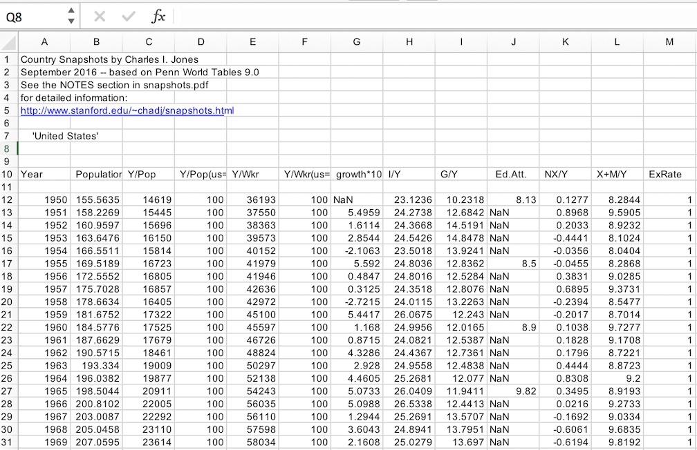

| tags: [ purrr economics tidyverse ] categories: [Posts ]
Using purrr to wrangle and clean economic data
I’m currently working on building a quantitative macroeconomics course with a professor of mine. The goal of the course is to introduce students within the Economics department to programming in Python and R. This is a big step for our department. Even though we have always been a fairly math heavy econ degree, the department has been stuck behind the curve in teaching students new and up-to-date technical skills. This professor, along with my help, wants to move the courses away from teaching STATA and Excel, to equipping students with proper data analysis tools for the workforce and academia.
The course is focusing on the material found in Macroeconomics 4th Edition by Charles I. Jones which, itself, is not focused on programming at all. We want to build a programming curriculum around the concepts in the book so students can stay interested in the application of these concepts.
One of the first assignments asks the students to read in data regarding per capita GDP of several countries around the world and create a graphic showing the change in per capita GDP over time. The author in the book directs students to the data found at: Country Snapshots 9.0, which is a wonderful PDF document containing example plots and links to the excel files storing these economic data.
My professor is worried about changes to the data sets in the future and has asked me to create a repository of pre-cleaned data sets that the students can access without worrying about the data disappearing into the future. Since the class is only focused on the basics of programming, I figured I would clean up the data and store it in a nice table for students to access later.
In this write up we’ll use library(purrr) to automate this retrieval of data. Some of the functions that we’ll use from purrr are compact(), map_df(), and possibly() to ensure that our code is as dynamic as possible. So let’s begin!
Here are some libraries we’ll need to finish this task:
library(tidyverse) # Includes purrr & %>% operator
library(rio) # Will make reading in our .xls files quick and simple
library(rvest) # We'll utilize web scraping for a brief moment to get a list of country codes
library(janitor) # Awesome package that makes cleaning messy data really easyThe students will be asked to create a plot from the data of any country of their choosing from this list of country codes. This means that we‚Äôll need every possible country data set pulled down and cleaned for students to utilize. Since we want to make sure we have the most recent list of countries every time we run this code, we‚Äôre going to use library(rvest) to scrape this list and clean up it so we can use the sweet TLA (Three-Letter-Abbreviation) country codes hidden inside üòãüòãüòã.
# Rcode to go and fetch country codes
# Note: Wrapping the expression in parentheses "()" just evaluates and prints
# the results on the spot.
(country_codes <- read_html("http://web.stanford.edu/~chadj/countrycodes6.3") %>%
html_text() %>%
str_extract_all("[A-Z]{3}") %>%
unlist() %>%
.[order(.)])## [1] "AFG" "AGO" "ALB" "ARE" "ARG" "ARM" "ATG" "AUS" "AUT" "AZE" "BDI"
## [12] "BEL" "BEN" "BFA" "BGD" "BGR" "BHR" "BHS" "BIH" "BLR" "BLZ" "BMU"
## [23] "BOL" "BRA" "BRB" "BRN" "BTN" "BWA" "CAF" "CAN" "CHE" "CHL" "CHN"
## [34] "CIV" "CMR" "COG" "COL" "COM" "CPV" "CRI" "CUB" "CYP" "CZE" "DJI"
## [45] "DMA" "DNK" "DOM" "DZA" "ECU" "EGY" "ERI" "ESP" "EST" "ETH" "FIN"
## [56] "FJI" "FRA" "FSM" "GAB" "GBR" "GEO" "GER" "GHA" "GIN" "GMB" "GNB"
## [67] "GNQ" "GRC" "GRD" "GTM" "GUY" "HKG" "HND" "HRV" "HTI" "HUN" "IDN"
## [78] "IND" "IRL" "IRN" "IRQ" "ISL" "ISR" "ITA" "JAM" "JOR" "JPN" "KAZ"
## [89] "KEN" "KGZ" "KHM" "KIR" "KNA" "KOR" "KWT" "LAO" "LBN" "LBR" "LBY"
## [100] "LCA" "LKA" "LSO" "LTU" "LUX" "LVA" "MAC" "MAR" "MDA" "MDG" "MDV"
## [111] "MEX" "MHL" "MKD" "MLI" "MLT" "MNE" "MNG" "MOZ" "MRT" "MUS" "MWI"
## [122] "MYS" "NAM" "NER" "NGA" "NIC" "NLD" "NOR" "NPL" "NZL" "OMN" "PAK"
## [133] "PAN" "PER" "PHL" "PLW" "PNG" "POL" "PRI" "PRT" "PRY" "QAT" "ROM"
## [144] "RUS" "RWA" "SAU" "SDN" "SEN" "SGP" "SLB" "SLE" "SLV" "SOM" "SRB"
## [155] "STP" "SUR" "SVK" "SVN" "SWE" "SWZ" "SYC" "SYR" "TCD" "TGO" "THA"
## [166] "TJK" "TKM" "TLS" "TON" "TTO" "TUN" "TUR" "TWN" "TZA" "UGA" "UKR"
## [177] "URY" "USA" "UZB" "VCT" "VEN" "VNM" "VUT" "WSM" "YEM" "ZAF" "ZAR"
## [188] "ZMB" "ZWE"Perfect! If you step back through the code and run it line by line you’ll see why we needed to use a regular expression to pull all the TLA’s from the web scraping results. The final pipe statements just orders the TLA’s in alphabetical order. Now we can use these codes to loop through the urls that hold all the excel files (i.e. http://www.stanford.edu/~chadj/snapshots/TLA.xls). But before we do that, let’s write a function to handle all the data munging and cleaning we’ll need.
Taking a look at the USA excel file shows some cleaning needs to be done

Right off the bat we can see we’ll need to skip the first 9 lines at the top of the excel file. There also appears to be a row of blank values after each of the headers. We’ll want to make sure we get rid of unnecessary missing data and ensure that each column is correctly typed as numeric. Since our goal is to use purrr to eventually loop through all possible countries, we’ll also want to create a column of the what country these data belong to. This will help when it comes to plotting and storing these data.
read_and_clean <- function(country_code = "USA"){
dat_url <- paste0("http://www.stanford.edu/~chadj/snapshots/", country_code, ".xls")
import(dat_url, skip = 9) %>%
clean_names() %>% # Great function from library(janitor)
na.omit() %>%
filter(population != "NaN") %>%
mutate_all(as.numeric) %>%
mutate(country = country_code)
}A quick run of this function with “USA” as the default country code shows nice and tidy output:
head(read_and_clean())## year population y_pop y_pop_us_100 y_wkr y_wkr_us_100 growth_100 i_y
## 1 1950 155.5635 14619 100 36193 100 NaN 23.1236
## 2 1951 158.2269 15445 100 37550 100 5.4959 24.2738
## 3 1952 160.9597 15696 100 38363 100 1.6114 24.3668
## 4 1953 163.6476 16150 100 39573 100 2.8544 24.5426
## 5 1954 166.5511 15814 100 40152 100 -2.1063 23.5018
## 6 1955 169.5189 16723 100 41979 100 5.5920 24.8036
## g_y ed_att nx_y x_m_y ex_rate country
## 1 10.2318 8.13 0.1277 8.2844 1 USA
## 2 12.6842 NaN 0.8968 9.5905 1 USA
## 3 14.5191 NaN 0.2033 8.9232 1 USA
## 4 14.8478 NaN -0.4441 8.1024 1 USA
## 5 13.9241 NaN -0.0356 8.0404 1 USA
## 6 12.8362 8.50 -0.0455 8.2868 1 USANow given that I have ran and figured out all this code, for this next part, I’m going to do a little hand waving. Apparently, there are some countries in our country_codes list that don’t keep track of this data. Therefore, in my initial attempts to use map() to iterate across all TLA’s, it would error out when running across a country that didn’t have a corresponding excel file. This is why we need to use the possibly() function. For more info run ?purrr::possibly() in your R console.
# Now we may "possibly" be able to run this code without it stopping lol
possibly_read_and_clean <- possibly(read_and_clean, otherwise = NULL)At this point we have three things left to do:
Iterate through all country TLA’s to create a list of data.frames.
Given the missing files for some countries, drop the inevitable NA’s from our list using
purrr:compact()Use
purrr::map_df()andbind_rows()to create one large data.frame for storing.
final_clean_dat <- purrr::map(country_codes,
~ possibly_read_and_clean(country_code = .x)) %>%
compact() %>%
map_df(bind_rows)Yay! üòÑ Now we have one large data set that can be updated at any point in time, but also will remain unchanged in case the data sets ever go offline. This code will allow the students to focus more on the applications at hand and save the data cleaning for a later class. Since we‚Äôve made it this far, let‚Äôs finish off with a plot!
final_clean_dat %>%
filter(country %in% c("USA","RUS","CHN","JPN")) %>%
ggplot(aes(x = year, y = y_pop,
group = country, color = country)) +
geom_line(size = 1.5) +
scale_color_manual(values = c("#c67c73","#356984","#ebe948","#cccccc")) +
scale_y_continuous(labels = scales::comma) +
labs(title = "Country Snapshot, per capitia GDP 1960-2014",
subtitle = "Graphic displays GDP/Pop for the countries of: United States, Russia, China, and Japan",
x = "Year", y = "per capita GDP") +
theme_bw() +
theme(plot.background=element_rect(fill="#fcfcfc"),
panel.background=element_rect(fill = "#fcfcfc"),
legend.position = "bottom",
legend.title = element_blank(),
legend.background = element_rect(fill="#fcfcfc"))
That’s it, thanks for reading. Hopefully you can gained a little better understanding of the usefulness of purrr and the functions it contains. You can find a gist of the script at my github account. ∎